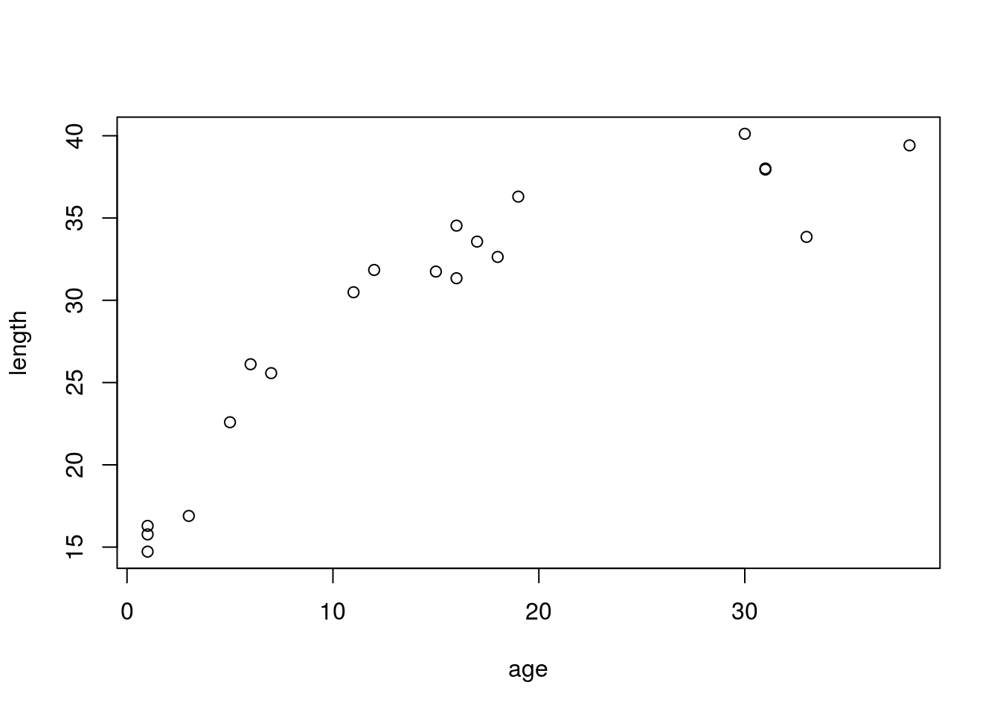
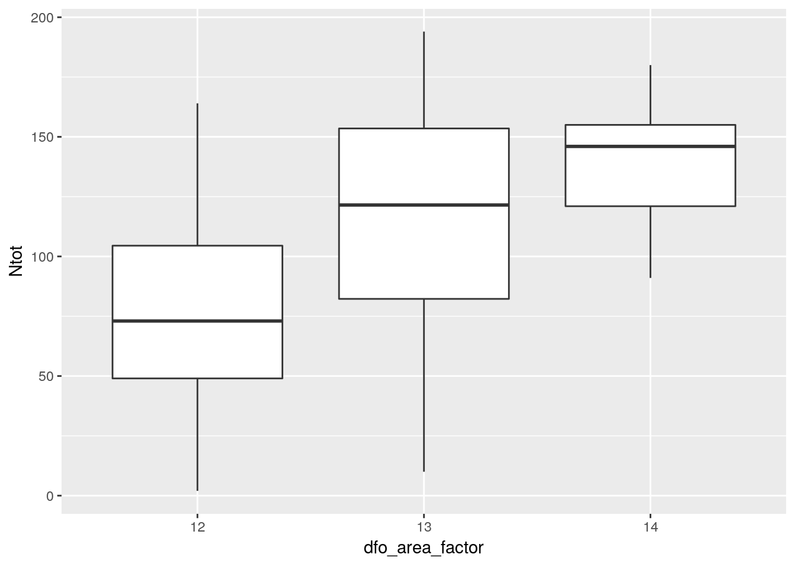
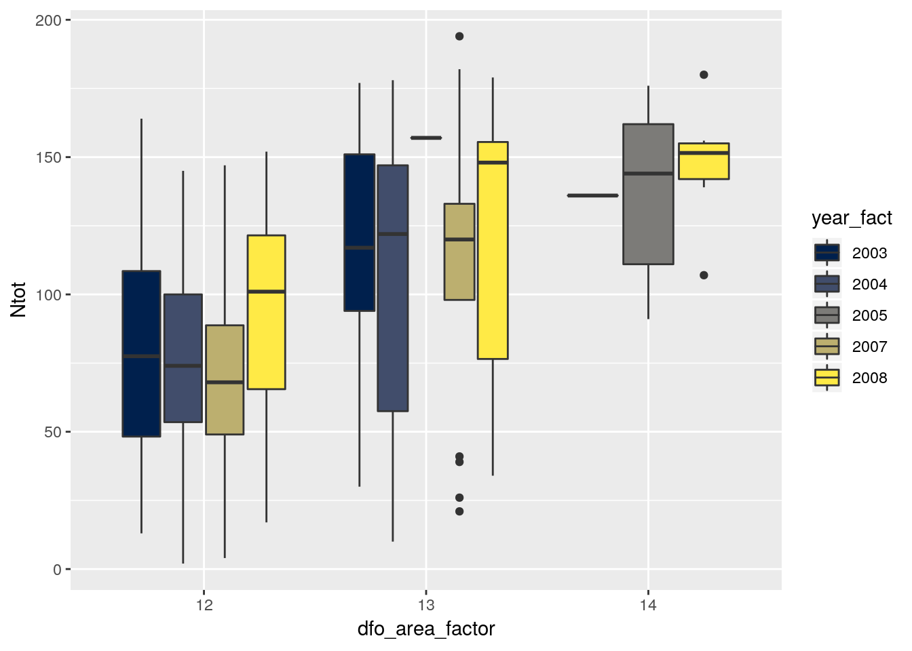
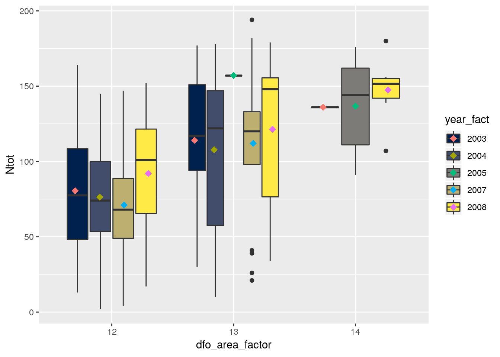

Visualiser des données ou des résultats
Simple plots
Il est très simple de produire des graphiques dans R. On peut par exemple lire le fichier growth_data.txt et représenter la longueur en fonction de l’âge.
df_growth <- read.table('data/growth_data.txt', header=TRUE)
head(df_growth)## age length
## 1 19 36.29889
## 2 12 31.84360
## 3 1 15.77166
## 4 17 33.56730
## 5 38 39.41566
## 6 11 30.48877Que fait la commande :
plot(length ~ age)Pourquoi, cela ne fonctionne t il pas ? Quel est le message d’erreur ?
plot(length ~ age, data=df_growth)Pourquoi est ce que ca fonctionne ? Quelles autres alternatives pouvez vous proposer ?
plot(df_growth$length ~ df_growth$age)
ou encore
with(df_growth, plot(length ~ age))
et aussi
plot(y = length, x = age, data=df_growth)Expliquer les différentes versions.
Avec de la couleur pour faire joli
Si on veut des points en rouge
plot(length ~ age, col = 'red', data = df_growth)
Avec de la couleur car c’est utile
df_longline <- read.table(file = 'data/LonglineExample.csv', skip = 3, header = TRUE, sep = ';')
head(df_longline, n=3)## Year DFO_STAT_AREA_CODE Lat_start Lon_start soaktime_mn
## 1 2003 12 50.81 -127.66 127
## 2 2003 12 50.88 -127.64 128
## 3 2003 12 50.93 -127.77 127
## Nyelloweye_caught Nquillback_caught Ndogfish_caught Nhooks_with_bait
## 1 6 9 6 119
## 2 0 22 0 166
## 3 3 46 0 50
## Nhooks_empty Nhooks Ntot Nother
## 1 27 196 50 29
## 2 25 229 38 16
## 3 73 222 99 50plot(Ntot ~ soaktime_mn, col = DFO_STAT_AREA_CODE, data = df_longline)
plot(Ntot ~ DFO_STAT_AREA_CODE, col = Year, data = df_longline)
## Le langage objetdf_longline$dfo_area_factor <- as.factor(df_longline$DFO_STAT_AREA_CODE)
plot(Ntot ~ dfo_area_factor, data = df_longline)
Représenter le nombre total d’hameçons occupés en fonction de l’année, soit en considérant l’année comme une variable quantitative, soit comme un facteur.
Les graphiques en R, sont simples à produire, mais assez laids.
Il est possible de les mettre à notre goût mais c’est parfois un peu pénible.
Graphique avec ggplot2
Des idées sur ce package
- developed by Hadley Wickham (Rice University, Houston, USA)
- highly recommended R packages to work with ggplot2: reshape2 and plyr (also developed by H. Wickham)
- first version called in 2007
Online resources
- ggplot2 official documentation: (http://docs.ggplot2.org/current/)
- R code related to ggplot2 cookbook:(http://www.cookbook-r.com/Graphs/)
- R code related to useR! ggplot2 book:(http://ggplot2.org/book/)
- Google groups to ask questions: (ggplot2@googlegroups.com)
- Statistical tools for high-throughput data analysis:(http://www.sthda.com/english/wiki/ggplot2-essentials)
- Github repository: https://github.com/yhat/ggplot/)
- RStudio Cheat Sheet : probably the most useful (http://www.rstudio.com/wp-content/uploads/2015/12/ggplot2-cheatsheet-2.0.pdf)
Idée principale
Le principe de base qui est de séparer les données de la représentation graphique et de diviser la représentation en éléments de base tels que les courbes, les axes ou les labels.
C’est un peu abstrait, lançons nous
Premier exemple
library(ggplot2)
ggplot(data=df_longline) + geom_point(aes(x = DFO_STAT_AREA_CODE, y = Ntot)) ggplot(data=df_longline) + geom_point(aes(x = dfo_area_factor, y = Ntot)) ggplot(data=df_longline) + geom_boxplot(aes(x = dfo_area_factor, y = Ntot)) 
On peut facilement différencier les années, il faut tut d’abord indiquer que l’année est un facteur
df_longline$year_fact <- as.factor(df_longline$Year)
ggplot(data=df_longline) + geom_boxplot(aes(x = dfo_area_factor, y = Ntot, fill=year_fact)) Pour changer la gamme de couleurs, notamment pour les daltoniens
ggplot(data=df_longline) + geom_boxplot(aes(x = dfo_area_factor, y = Ntot, fill=year_fact)) + scale_fill_viridis_d(option = 'E')
Si on veut rajouter la moyenne
ggplot(data=df_longline, aes(x = dfo_area_factor, y = Ntot, fill=year_fact)) + geom_boxplot() +
stat_summary(fun.y=mean, geom="point", aes(group = year_fact, col = year_fact),
shape=18, size=3,show.legend = TRUE, position=position_dodge(width=0.8)) + scale_fill_viridis_d(option = 'E')
De belles possibilités et une communauté très active